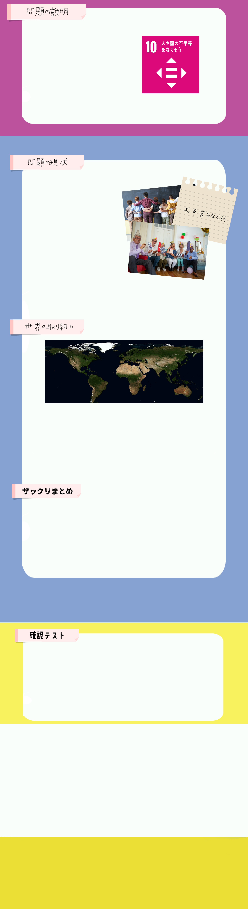
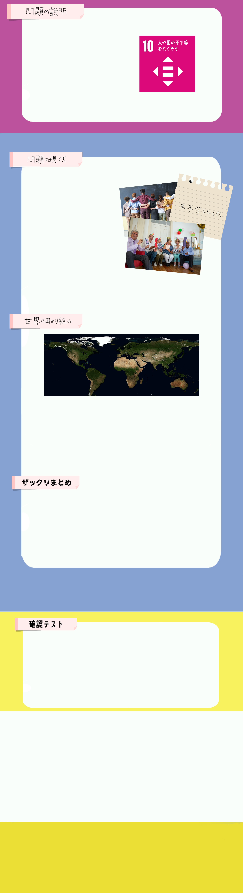

持続可能な開発目標SDGsの目標10では人や国の不平等をなくすことを目指し、各国家が取り組みを進めています。
性別や年齢をはじめ障がい、人種、民族などを理由とする差別が今も存在しており、それは人と人の間だけでなく国家間でも起こっています。
グローバル化が進む中で人や物、お金などが自由に移動できるようになったことで、先進国と途上国両方で富豪と貧困者の間の格差は大きなものとなってしまいました。
また世界で最も豊かな資産家である62人の総資産額は、世界人口の半分である35億人の総所得に匹敵しているとされ、貧富の二極化が起こっています。
これにより経済成長が阻害され、貧困削減への努力を妨げ、国家間の緊張を高め、社会不安を煽ることとなっています。
さらに政治的、経済的、社会的な機会の不平等から民族やジェンダー、性的マイノリティー、難民といった特定の社会グループが教育や政治的参加の機会を奪われることによって、親から子への貧困の世代間連鎖や社会の分断が起こることになり、これらが経済格差所得や資産が多い人と少ない人の差が広がっているということ。などにさらなる影響を与えてしまうことも課題となっています。
Apple は、2015年4月8日にアップルiOSに約300の新しい絵文字を加えると発表。その中には、黒人や黄色人種のキャラクター、同性カップルの家族の絵文字などが含まれました。
2019年7月17日の「国際絵文字デー」には、同年度の秋より絵文字がさらに増えると発表。同性同士や異人種のカップル、車椅子や白状を使う人、盲導犬、義足などの、多様人種に対応した新しい絵文字も使えるようになりました。
差別問題は性別や年齢をはじめ障がい、人種、民族など多くの理由があり、人と人の間だけでなく でも起こっている。
※穴埋め箇所をクリックすると正解表示